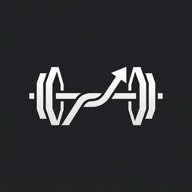

I build products end to end, and ship them.
Full-stack and mobile engineer, 14 years in production. Native apps, real-time voice and AI systems, and the infrastructure underneath, from the first schema to the App Store listing.
Open to freelance and contract work
DropCove
Drop a file on your MacBook's notch to convert, compress, OCR or merge it. Copy a token, a color or some JSON and it tells you what it is.
- The notch is the drop target
- Drag a file to the top of the screen and the notch opens with the actions that fit, ranked by what you use. For an image, the top action is already done before you click.
- A clipboard that reads what you copy
- Ten detectors for JWTs, colors, JSON, timestamps, links and more. API keys are masked, never saved, and cleared after a minute.
- Nothing leaves the Mac
- Every action runs on the device, with video and OCR in a separate helper process. No account and no telemetry; the only network traffic is the update check.
- Offline licenses
- Pro keys are Ed25519-signed and checked with CryptoKit on the device. A Cloudflare Worker takes the store's webhook, signs the key and emails it.
Swift 6 · AppKit · SwiftUI · AVFoundation · PDFKit · Vision · XPC · SQLite · Sparkle · CryptoKit · Cloudflare Workers · Astro

Liftrix
A training app for functional fitness, fitness racing, powerlifting, weightlifting and bodybuilding.
- Bar Path
- Film a lift and get the bar's path and velocity, tracked on the device and scaled from a measured plate.
- Snap WOD
- Photograph a whiteboard workout and it becomes a timer you can run.
- Native where it counts
- Swift and Kotlin modules burn the timer into recorded video and keep audio cues firing on a locked screen.
- Gym portal
- A multi-tenant membership portal each gym runs on its own subdomain, on the same backend.
React Native · Expo · TypeScript · Swift · Kotlin · Supabase · Postgres · RevenueCat · Gemini · Next.js · Cloudflare Workers
- Voice, Siri or a photo
- Log spending by voice, through Siri, or from a receipt photo. No bank linking, ever.
- Your data stays on your phone
- The ledger lives on the device and syncs through iCloud. The server keeps only what billing needs.
- Totals come from SQL
- Speech is parsed on the device first, with a language-model fallback. The totals are computed by the database, never guessed.
- Server-verified purchases
- Every purchase is checked against Apple's App Store Server API and granted exactly once.
Swift · SwiftUI · SwiftData · CloudKit · App Intents · Vision · StoreKit 2 · Supabase · Gemini
tortui
Search torrent indexers and download from one terminal UI. A single static binary, with no daemon behind it.
tortui --demo: synthetic data, no network.- Source-agnostic
- Query any Torznab endpoint or a small YAML definition; results merge and de-duplicate. No indexer is special-cased.
- Built-in engine
- Downloads run in-process and resume after a restart without re-fetching verified pieces.
- Lawful by default
- It ships with one source, the Internet Archive. No telemetry and no phone-home, and it fits an 80×24 terminal.
Go · Bubble Tea · Lip Gloss · anacrolix/torrent · bbolt
What I can take on
Fourteen years across all of these, the last few leading a team. Open a row to see what it means for your project.
Mobile and Mac apps React Native · Expo · SwiftUI · AppKit · Kotlin
You bring the idea; I get it onto the App Store and Google Play. Native features where they matter, subscriptions that just work, and the back-and-forth with app review handled for you. Liftrix and Linaw are two I took there on my own, and DropCove is a Mac app I sell direct, signed and notarized.
Real-time voice and AI OpenAI · Gemini · Claude · realtime speech · RAG
Assistants people can talk to in their own language, and AI features that answer from your data instead of guessing, tested so bad answers get caught before your users see them. I'm not tied to one vendor: I pick the OpenAI, Gemini or Claude model that fits the job and the budget.
Web platforms Next.js · React · Node · Postgres · Payload
Portals, dashboards and white-label products where one codebase serves many clients, built to stay fast and cheap to run as you grow.
Infrastructure and security AWS · Cloudflare · Docker · GitHub Actions · OIDC
Deploys you don't have to babysit, no secrets sitting in the repo, and an app that holds up when a security auditor comes knocking.
Developer tools Go · Bubble Tea · CLIs
Small, fast tools your team installs in one step and forgets about. Tortui is one you can try today.
The full stack
TypeScript · Swift · Kotlin · Go · Python · SQL · React 19 · Next.js 16 · Node.js · React Native · Expo · SwiftUI · AppKit · Supabase · PostgreSQL · pgvector · Redis · Socket.IO · OpenAI · Gemini · Claude · Vertex AI · AWS · Cloudflare Workers · Docker · GitHub Actions · Vitest · Playwright · Maestro

Have a product to build?
New apps, AI features, or a stalled product that needs to reach the store. Tell me about it.
github.com/kdta91